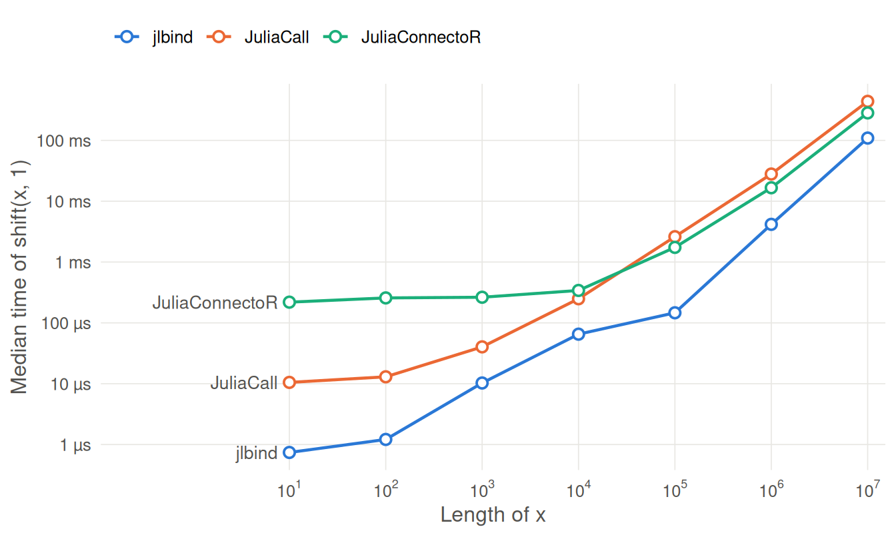

| R | 4.6.1 |
| Julia | 1.13.1 |
| CPU | AMD Ryzen 7 8845HS w/ Radeon 780M Graphics |
| jlbind | 0.0.0.9000 |
| JuliaCall | 0.17.6 |
| JuliaConnectoR | 1.1.6 |
| JuliaCall commit | 947d1f3 |
jlbind calls Julia code that was compiled ahead of time, through one .Call() per function. The alternatives, JuliaCall and JuliaConnectoR, run Julia itself: JuliaCall embeds a Julia session in the R process, and JuliaConnectoR starts one in a separate process and talks to it over a socket. This article compares the three on the same Julia functions.
In short, on this machine, jlbind is ready to use 105 to 141 times sooner, and a call costs 0.691 µs rather than 8.65 µs (JuliaCall) or 194 µs (JuliaConnectoR).
The benchmarks
The functions are the same as in the hellojl test client in jlbind’s repository:
greet(name::String) = "Hello, " * name * "!"
shift(x::Vector{Float64}, by::Float64) = x .+ byjlbind calls them through hellojl, compiled into a jlbind library. JuliaCall and JuliaConnectoR evaluate the same definitions and call them with julia_call() and juliaFun(). Each interface runs in fresh R processes, since jlbind and JuliaCall can’t share one.
-
Startup: the time from loading the package to the result of the first call,
greet("world"), in a new R process (R’s own startup excluded), repeated 10 times. -
Call overhead: the median time of
greet("world"), a string in and a string out, after the first call. -
Data transfer: the median time of
shift(x, 1)for numeric vectorsxof length 10 to 107, which copiesxto Julia and the result back.
The benchmark script is vignettes/articles/performance/benchmark.R. The results below were run on:
Startup
| Interface | Median | Min | Max |
|---|---|---|---|
| jlbind | 24.9 ms | 23.8 ms | 28 ms |
| JuliaCall | 3.51 s | 3.4 s | 3.77 s |
| JuliaConnectoR | 2.61 s | 2.54 s | 2.67 s |
For jlbind, startup is loading the compiled library and binding the package’s routines. JuliaCall and JuliaConnectoR start Julia, and compile each function the first time it is called. With a real Julia package instead of two one-line functions, compiling and loading the package typically take much longer than here.
Call overhead
| Interface | Time per call | Relative to jlbind |
|---|---|---|
| jlbind | 0.691 µs | 1× |
| JuliaCall | 8.65 µs | 13× |
| JuliaConnectoR | 194 µs | 280× |
A jlbind call is a .Call() into the compiled library, where the arguments are converted with R’s C API and the function is called directly. JuliaCall converts arguments and looks up the function at run time in the embedded session. JuliaConnectoR serializes the call to a separate Julia process and the result back, so each call costs a round trip.
Data transfer

| Length | jlbind | JuliaCall | JuliaConnectoR |
|---|---|---|---|
| 10 | 0.741 µs | 10.5 µs | 219 µs |
| 100 | 1.21 µs | 13 µs | 257 µs |
| 1,000 | 10.3 µs | 40.3 µs | 264 µs |
| 10,000 | 65.2 µs | 249 µs | 341 µs |
| 100,000 | 146 µs | 2.61 ms | 1.74 ms |
| 1,000,000 | 4.16 ms | 28 ms | 16.6 ms |
| 10,000,000 | 109 ms | 438 ms | 283 ms |